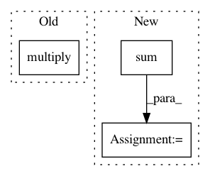

26949ac70fc9cff80e633b0476c306d7809c8263,qiskit/aqua/components/uncertainty_models/multivariate_variational_distribution.py,MultivariateVariationalDistribution,__init__,#MultivariateVariationalDistribution#Any#Any#Any#Any#Any#Any#,81
Before Change
quantum_instance = QuantumInstance(backend=BasicAer.get_backend("statevector_simulator"))
result = quantum_instance.execute(qc_)
result = result.get_statevector(qc_)
values = np.multiply(result, np.conj(result))
values = list(values.real)
probabilities = values
super().__init__(num_qubits, probabilities, low, high)
self._var_form = var_form
After Change
self._var_form = var_form
self.params = params
self._initial_distribution = initial_distribution
probabilities = np.zeros(2 ** sum(num_qubits))
super().__init__(num_qubits, probabilities, low, high)
self._var_form = var_form
self.params = params
self._initial_distribution = initial_distribution
In pattern: SUPERPATTERN
Frequency: 4
Non-data size: 3
Instances
Project Name: Qiskit/qiskit-aqua
Commit Name: 26949ac70fc9cff80e633b0476c306d7809c8263
Time: 2019-04-30
Author: ouf@zurich.ibm.com
File Name: qiskit/aqua/components/uncertainty_models/multivariate_variational_distribution.py
Class Name: MultivariateVariationalDistribution
Method Name: __init__
Project Name: soft-matter/trackpy
Commit Name: 8d74e077e63dac70a6932eb0496a4bb821253f5b
Time: 2012-12-05
Author: daniel.b.allan@gmail.com
File Name: mr/wire_models.py
Class Name: Model
Method Name: residual
Project Name: bulik/ldsc
Commit Name: edcd60f9853ba2fabdcc13164230ef8454773dd1
Time: 2014-12-08
Author: hilaryfinucane@gmail.com
File Name: ldscore/jackknife.py
Class Name: Hsq
Method Name: __init__
Project Name: NifTK/NiftyNet
Commit Name: a59350bf9cc20c9e02e2397d31bbf87848db8f9e
Time: 2017-10-19
Author: carole.sudre.12@ucl.ac.uk
File Name: niftynet/evaluation/region_properties.py
Class Name: RegionProperties
Method Name: glcm